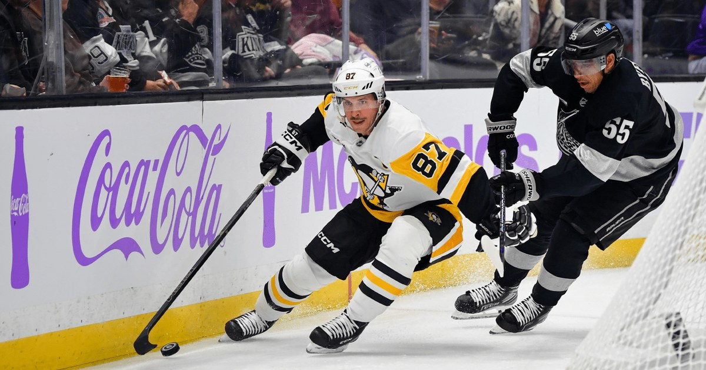

The Chase, Ep. 1: Crosby is 24 points from tying Ron Francis for fifth all-time
Sidney Crosby sits at 1,774 career points after passing Marcel Dionne on Saturday in Los Angeles. Ron Francis, fifth all-time at 1,798, is 24 points away from a tie — 25 from being passed. This is The Chase, and we're tracking it every step of the way.

Disclosure: this post contains affiliate links. I earn a commission on qualifying purchases.
The Chase is on
Sidney Crosby has 1,774 career points. Ron Francis, fifth on the NHL's all-time scoring list, has 1,798.
That's the whole story, and it's the only story that matters for the next few months: Crosby is 24 points from tying Francis, 25 from passing him. Every game from here is a step on that count, and this is the series that's going to track it — episode by episode, point by point, until the night he gets there.
Welcome to The Chase.
How he got here
Saturday night in Los Angeles, Crosby passed Marcel Dionne for sixth all-time. It wasn't a pretty goal — Evgeni Malkin's one-timer from the right circle caught a piece of Crosby on its way in at 17:13 of the second period, and the goal was first credited to Malkin before the replay showed the deflection. But it counted all the same: career point No. 1,772, past Dionne's 1,771, in the building where Dionne did most of his damage across 12 seasons as a King.
Crosby didn't know he'd been credited with it at first. He tried to steer the credit back to Malkin. That's the kind of night it was — and then, with 1:16 left in the third and the Kings' net empty, he dove to poke a loose puck home after being impeded by Erik Gustafsson on the breakaway. Point No. 1,773. Penguins 5, Kings 2. Four-game losing streak over, seven-game road skid over.
Sunday in Anaheim, he added one more: an assist in the Penguins' 5-2 loss to the Ducks. That makes it 1,774 — 660 goals and 1,114 assists in 1,438 games.
He tied Dionne at 1,771 in Montreal on October 31. It took him a week to pass him. He is 39 years old, in his 21st season, and he is still doing this.
The list ahead of him
The names left in front of Crosby are the ones on the building. Gretzky's 2,857 is untouchable, and Gordie Howe's 1,850 is a long way off yet. But Francis, at 1,798, is close enough to watch in real time.
Here's the math, straight off the pace: Crosby has 13 points in 18 games this season — 6 goals, 7 assists, 0.72 points per game. At that pace, the gap closes in roughly 33 games. There are 64 games left on the schedule. If he stays healthy and keeps producing anything like this, he doesn't just catch Francis this season — he clears him with room to spare.
That's pace math, not a prediction. Hockey doesn't work in straight lines, and a cold week or a missed game moves the date. But the direction is clear, and the gap is small enough that every point from here matters.
What it means
Crosby has been chasing history for so long that it's easy to forget how rare this is. Sixth all-time in scoring, in a league that's been around for more than a century, at 39, on a Penguins team that's rebuilding around him. Dionne held sixth place for decades. Crosby took it from him in a week.
And now there's one more name. Francis played 23 seasons and finished with 1,798 points. The next time the Penguins play, the count starts moving again.
What's next
The Penguins are in San Jose on Wednesday night — 10:00 PM ET against the Sharks at SAP Center — then back home Saturday at 7:00 PM ET against Ottawa. Every point Crosby picks up in those games comes off the gap.
We'll be here for all of it. The Chase continues Wednesday.
The box score
Final score (Nov 7): Penguins 5, Kings 2
Final score (Nov 8): Ducks 5, Penguins 2
Crosby: 1,774 career points (660 G, 1,114 A, 1,438 GP)
Milestone: Passed Marcel Dionne (1,771) for 6th all-time, Nov 7
Next target: Ron Francis, 1,798 (5th) — 24 to tie, 25 to pass
This season: 6 G, 7 A, 13 PTS in 18 GP (0.72 PPG)
Next game: Wed Nov 11, 10:00 PM ET at San Jose Sharks
Then: Sat Nov 14, 7:00 PM ET vs Ottawa Senators
Sources
• Crosby, Novak each scores twice, Penguins defeat Kings to end four-game skid (NHL.com)
• Crosby passes Dionne for 6th-most points in NHL history (theScore)
• ESPN box score, Ducks 5, Penguins 2, Nov 8, 2026 (event 401892679) — Crosby 0G/1A
• ESPN season statistics — Crosby 6G/7A/13 PTS in 18 GP, 0.72 PPG
Gear up: Fanatics